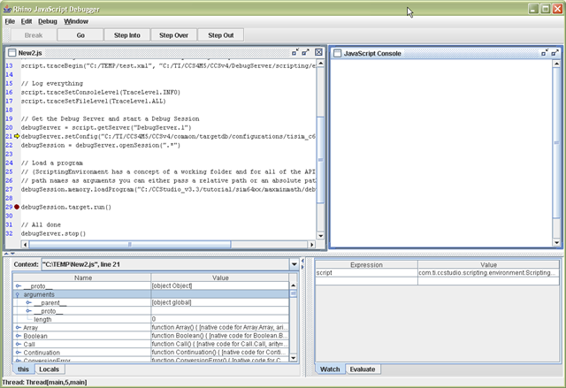
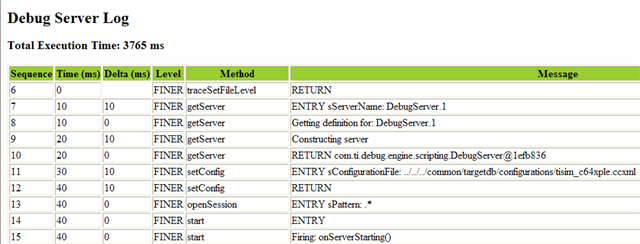

7.6. Scripting¶
Debug Server Scripting (DSS) is a set of cross platform Java APIs to the Debug Server which allow scripting through Java or 3rd Party tools such as JavaScript (via Rhino), Java, Python (via Jython), TCL (via Jacl/Tclblend) etc. JavaScript is the default (and preferred) scripting language supported by DSS.
The Debug Server is the base debug engine of Code Composer Studio (CCS). It can be accessed by both DSS and the CCS IDE.
The training video below contains a very thorough coverage of the fundamentals and operation of DSS.
7.6.1. Environment Setup and Running a JavaScript¶
The host environment must be properly configured before DSS can be run. This involves setting the system PATH, classpaths, other environment variables, etc.. When launching the Rhino JavaScript engine, various parameters must be passed. To simplify all these actions, DSS provides a batch/shell script which sets up the necessary environment and invokes the Rhino Javascript engine with the necessary parameters with the specified JavaScript to run. This file is stored in [INSTALL DIR]\ccs\ccs_base\scripting\bin. This file is dss.bat on Windows and dss.sh on Linux/Mac, with the first parameter being the JavaScript to run, and subsequent optional parameters to be passed to the JavaScript.
Example:
> dss myscript.js scriptParam1 scriptParam2
The above example has the path to batch/shell script in the system PATH so the dss script can be called from anywhere.
7.6.2. Debugging Your JavaScript¶
The Rhino Debugger is a GUI that allows debugging of interpreted JavaScript scripts run in Rhino. It comes bundled with the installation of Rhino which comes with DSS. You can step through your JavaScript , view contents of variables, set breakpoints, etc.

7.6.2.1. Launching the the Rhino Debugger¶
To use the Rhino Debugger with your DSS scripts, pass in the -dss.debug parameter when calling the dss script via dss.bat/sh
> dss.bat -dss.debug myScript.js
Note
in legacy releases (prior to 5.3), it was required to make changes to the actual dss.bat / dss.sh script to call the Rhino debugger. This is not necessary anymore.
7.6.2.2. CCS GUI Visibility¶
Sometimes it is not enough to simply use the Rhino Debugger to debug automation errors, but target debug visibility is also needed to properly diagnose the cause of the errors. In such cases, it is possible to attach CCS to a running debug session created by DSS.
7.6.3. Examples¶
DSS ships with several examples. These examples are located in:
[INSTALL DIR\]\ccs\ccs_base\scripting\examples
The examples are meant to demonstrate and highlight some of the capabilities of DSS. Some of the examples available are:
- DSS basic examples (DebugServerExamples) - These sample scripts which perform basic memory and breakpoint operations.
- DVT basic examples (DVTExamples) - Sample script for collecting and exporting function profiling data.
- Loadti (loadti) - a generic command-line loader which can load/run an executable .out file on TI targets.
- Test Server (TestServer) - demonstrates how to use DSS to set-up a debug test server and have remote clients send debug commands via TCP/IP socket connection.
Availability of examples vary per CCS version
It is strongly encouraged for new users to open up the DSS basic examples and slowly walk through them to get an understanding of how DSS works. The examples are well commented and should give you an understanding of the basic steps needed to create the scripting environment and start a debug session for a specified target, in addition to highlighting some of the DSS APIs available. It is also useful to use the example scripts as a baseline for creating your own scripts (by referencing it or simply copying and then "gutting" it to use as a template).
Note
The examples depend on specific targets. If device support for those targets were not installed (ex. MSP430), then the script will not be able to run "as-is". However, it is still very useful to look through the script, as mentioned above. The script can also be modified to support your target of choice.
7.6.4. DSS API¶
References to the full DSS API documentation can be found in: [INSTALL DIR]\ccs\ccs_base\scripting\docs\GettingStarted.htm
7.6.5. Scripting Console¶
Interactive scripting support is available though the CCS Scripting Console View, and usage examples are available in the Scripting Console. DSS APIs can be called from the console. Full standalone DSS JavaScript files can be run from the Scripting Console.
7.6.6. Target Configuration¶
The Target Configuration File needs to be specified to DSS before attempting to start a debug session. This is done by passing in a target configuration (.ccxml) file to the setConfig() API. The CCS Target Setup tool can be used to create a new target configuration file.
7.6.7. Exception Handling¶
All DSS APIs throw a Java exception when encountering errors. These exceptions can be caught and handled within the script (ex. JavaScript try-catch-throw-finally).
try {
debugSession.memory.loadProgram(testProgFile);
} catch (ex) {
dssScriptEnv.traceWrite(testProgFile + " does not exist! Aborting script");
quit(); // call custom quit routine to do some cleanup to gracefully exit the script
}
7.6.8. Using GEL¶
You can call GEL functions from DSS. The expression.evaluate() API can be used to call any GEL function/expression.
// Call GEL function
debugSession.expression.evaluate("myGEL_call()");
7.6.9. Multiple Debug Sessions for Multi-core Debug¶
It is possible to open and control a debug session for each CPU on a multi-core target. Simply use the openSession() API and specify the board name and CPU name to open a session to a specific CPU.
Lets take a look at an example of opening debug sessions to a TCI6488 EVM with 6 C64x+ DSPs. First, it is important to know the exact board name and CPU names used by the target configuration ccxml file. the names can be found by looking inside the ccxml file used or opening the ccxml file in the new Target Configuration GUI tool. For our example, the names are:
- Board Name: TCI6488EVM_XDS510USB
- CPU Name(s): C64PLUS_F1A, C64PLUS_F1B, C64PLUS_F1C, C64PLUS_F2A, C64PLUS_F2B, C64PLUS_F2C
Once you know the names, the openSession() API can be called in a variety of ways:
- Passing in a unique name. In the system configuration, each debuggable object (CPU) has a unique name that is constructed as: boardname/CPUName
openSession("TCI6488EVM_XDS510USB/C64PLUS_F1A");
- Passing in the board name and a CPU name to open a debug session for single configured CPU:
openSession("TCI6488EVM_XDS510USB", "C64PLUS_F1A");
- This method also allows the passing of wildcards ("*") to sBoardName and sCPUName. A wildcard will match the first found target. In this case, the a wildcard to open a connection to the first CPU of the board named "TCI6488EVM_XDS510USB"
openSession("TCI6488EVM_XDS510USB", "*");
Lets take a look at what a real JavaScript code would look like using the first option (passing in a unique name):
...
// Get the Debug Server and start a Debug Session
debugServer = script.getServer("DebugServer.1");
// Configure target for a TCI6488 EVM with SD XDS510 USB emulator
script.traceWrite("Configuring debug server for TCI6488 EVM...");
debugServer.setConfig("TCI6488EVM_SD510USB.ccxml");
script.traceWrite("Done!");
// Open a debug session for each TCI6488 CPU
script.traceWrite("Opening a debug session for all TCI6488 cores...");
debugSessionF1A = debugServer.openSession("TCI6488EVM_XDS510USB/C64PLUS_F1A");
debugSessionF1B = debugServer.openSession("TCI6488EVM_XDS510USB/C64PLUS_F1B");
debugSessionF1C = debugServer.openSession("TCI6488EVM_XDS510USB/C64PLUS_F1C");
debugSessionF2A = debugServer.openSession("TCI6488EVM_XDS510USB/C64PLUS_F2A");
debugSessionF2B = debugServer.openSession("TCI6488EVM_XDS510USB/C64PLUS_F2B");
debugSessionF2C = debugServer.openSession("TCI6488EVM_XDS510USB/C64PLUS_F2C");
script.traceWrite("Done!");
// Connect to each TCI6488 CPU
script.traceWrite("Connecting to all TCI6488 CPUs...");
debugSessionF1A.target.connect();
debugSessionF1B.target.connect();
debugSessionF1C.target.connect();
debugSessionF2A.target.connect();
debugSessionF2B.target.connect();
debugSessionF2C.target.connect();
script.traceWrite("Done!");
// Load a program for just the first TCI6488 CPU
script.traceWrite("Loading program to first TCI6488 CPU...");
debugSessionF1A.memory.loadProgram("HelloTCI6488.out");
script.traceWrite("Done!");
// Load a program for just the second TCI6488 CPU
script.traceWrite("Loading program to second TCI6488 CPU...");
debugSessionF1B.memory.loadProgram("HelloTCI6488.out");
script.traceWrite("Done!");
// Run the program for just the first TCI6488 CPU
script.traceWrite("Executing program on first TCI6488 CPU...");
debugSessionF1A.target.run();
script.traceWrite("Execution complete!");
// Reload program for just the first TCI6488 CPU
script.traceWrite("Loading program to first TCI6488 CPU...");
debugSessionF1A.memory.loadProgram("HelloTCI6488.out");
script.traceWrite("Done!");
// Run the program for the first and second TCI6488 CPU simultaneously
script.traceWrite("Executing program on first and second TCI6488 CPU...");
var dsArray = new Array();
dsArray[0] = debugSessionF1A;
dsArray[1] = debugSessionF1B;
debugServer.simultaneous.run(dsArray); // Run CPUs 1 and 2
script.traceWrite("Done!");
...
7.6.10. Logging¶
DSS logging can be enabled using the traceBegin() API. The logs can contain various information such as timestamps, sequence ID, time deltas and status for each log entry. The amount of logging (entries) can be set to the desired verbosity level with the traceSetFileLevel() API. At the higher verbosity levels, many internal diagnostic and status messages will be logged, which can be very useful in trying to determine what/where exactly was the cause of a script failure. However this can lead to very large log files for long automation sessions so it is recommended to use the higher verbosity settings only when needed.
The generated log files are XML format. Everyone will have slightly different logging needs and by producing standardized XML log files it is easy to transform XML using XSLT (XML StyLesheet Transforms) into any custom format (comma-delimited text, HTML, etc.). The traceBegin() API can take a second parameter (the first being the log file name) to specify an XSLT file to be referenced when opening the XML file in your web browser. An example XSLT file (DefaultStylesheet.xsl) is provided in the scripting examples folder with DSS.
An example of raw XML output of a DSS log in a text editor:
<?xml version="1.0" encoding="windows-1252" standalone="no"?>
<?xml-stylesheet type="text/xsl" href="DefaultStylesheet.xsl"?>
<log>
<record>
<date>2008-10-30T17:16:53</date>
<millis>1225401413228</millis>
<sequence>6</sequence>
<logger>com.ti</logger>
<level>FINER</level>
<class>com.ti.ccstudio.scripting.environment.ScriptingEnvironment</class>
<method>traceSetFileLevel</method>
<thread>10</thread>
<message>RETURN</message>
</record>
<record>
<date>2008-10-30T17:16:53</date>
<millis>1225401413238</millis>
<sequence>7</sequence>
<logger>com.ti</logger>
<level>FINER</level>
<class>com.ti.ccstudio.scripting.environment.ScriptingEnvironment</class>
<method>getServer</method>
<thread>10</thread>
<message>ENTRY sServerName: DebugServer.1</message>
</record>
...
Note the second line which references DefaultStylesheet.xsl:
<?xml-stylesheet type="text/xsl" href="DefaultStylesheet.xsl"?>
Opening the same log file in a web browser will look something along the lines of:

Warning
Most browsers block XML files from accessing local XSLT files in the same directory and will prevent you from viewing the XML file in the browser. Simple work arounds include opening the file in Excel or if you have Python installed, you can host a simple web server and open the file via http on your local host server.
More information on XSLT (including information on how to create your own) can be found on this XSLT Tutorial site.
7.6.11. Profiling¶
Warning
The below DSS profiling functionality has been greatly deprecated in support. It is recommend to use alternate solutions for profiling.
7.6.11.1. Profile Setup¶
To setup profiling, a profile activity object for each desired activity needs to be created using the profileSetup.getActivity() API. A default activity to profile must be passed into the API. There are currently three default activities supported:
- Collect Code Coverage and Exclusive Profile Data - this will configure the profiler to collect code coverage data
- Profile all Functions for CPU Cycles - this will configure the profiler to collect CPU cycles (cycle.CPU) for all functions
- Profile all Functions for Total Cycles - this will configure the profiler to collect total cycles (cycle.total) for all functions
Note that the activities available can vary depending on the target. The list of supported activities for a particular target can be generated with the profileSetup.printActivityList() API.
To create and enable a profile activity object for profiling all functions for Total cycles:
// retrieve an activity from the activity list based on the name
myProfileActivity = debugSession.profileSetup.getActivity("Profile all Functions for Total Cycles");
// enable profiling for specified activity
myProfileActivity.setStatus(true);
Once an activity object is created, it can be further configured to collect data for more events than just the default event. This can be done by getting a property object for the event to be profiled from the activity interface, and then enabling it. The following example will add the collection of L1P cache misses to the events being profiled:
// get the propery object for L1P miss summary
eventL1PMissSummary = myProfileActivity.getProperty("Events.L1P.miss.summary");
// enable collection L1P miss summary data
eventL1PMissSummary.setBoolean(true);
If you wish to profile many events, you can create an array of the desired events and then use a 'for' loop for a cleaner implementation:
// array of events to be profiled
var evtNames = new Array("Events.L1D.hit.summary",
"Events.L1D.miss.summary",
"Events.L1D.miss.conflict",
"Events.L1D.miss.non_conflict",
"Events.L1P.miss.summary",
"Events.CPU.stall.mem.L1D",
"Events.CPU.stall.mem.L1P",
"Events.L1P.hit"
);
// retrieve an activity from the activity list based on the name
myProfileActivity= debugSession.profileSetup.getActivity("Profile all Functions for Total Cycles");
// enable profiling of all events in the array
for (evtCount=0;evtCount<evtNames.length;evtCount++)
{
event = myProfileActivity.getProperty(evtNames[evtCount]);
event.setBoolean(true);
}
// enable profiling for specified activity
myProfileActivity.setStatus(true);
Note that the available events to profile will vary depending on the device. The profile activity listProperties() API will generate the full list of all events supported for the current device.
7.6.11.2. Exporting Profiling Data¶
The exporting of the collected profiling data is done with DVT. The API
doc for the DVT and examples can be found from:
[INSTALL DIR]\ccs\ccs_base\scripting\docs\GettingStarted.htm
dvtServer = dssScriptEnv.getServer("DVTServer.1");
Then a profile analysis session must be opened to export the data. Pass in the debug session and the analysis provider. For the analysis provider, the options are:
- FunctionProfile - Export function profile data
- CoverageProfile - Export code coverage data
// create a profile analysis session for function level profiling data collected
var profileAnalysisSession = dvtServer.openProfileAnalysisSession(debugSession, "FunctionProfile");
Before exporting any data, we need to make sure that all processing of profiling data is completed:
profileAnalysisSession.waitUntilProfilingComplete();
Next create a ProfileAnalysisExport object for all tables of collected profiling data
var exports = profileAnalysisSession.exportData();
We can then export the data. We can choose to export some or all of the data. The example below will use the API to export all the data for the first table into a *.csv file.
exports[0].save("myProfilingData.csv");
When exporting multiple tables (a table exists for each event enabled), a 'for' loop can be used:
for (var e=0; e < exports.length; e++)
{
exports[e].save(profileResultsFolder + "\\" + exports[e].getName() + ".csv");
}
Once done, don't forget to terminate the profile session and terminate the DVT Server:
// close profile session
profileAnalysisSession.terminate();
dvtServer.stop();
7.6.12. Project Management¶
DSS does not have any APIs for project management (project create, project build, etc) since DSS is for scripting the debugger (and not the project manager). However there are command-line utilities that come with CCS to create, build and import a CCS project that can be called from a script, effectively automating such actions. More information on these commands are available in the Create and Build Projects Using Command Line article.
7.6.13. Breakpoints¶
DSS allows setting Breakpoints and having their properties modified.
- Setting intrusive breakpoint - halts the target
var bp1 = debugSession.breakpoint.add("0x100") // breakpoint with address
var main = debugSession.symbol.getAddress("main") // Query for address of label "main"
var bp1 = debugSession.breakpoint.add(main) // set breakpoint based on the address "main"
- Setting non-intrusive breakpoint - perform an action on breakpoint hit
Breakpoint can be set by creating a breakpoint property object. Breakpoint properties are set via "setString()" DSS api. To get the property name and possible value, on CCS IDE right click on a given Breakpoint and select its properties.

Property names are directly dervied from the properties displayed along with their hirearchy.
Ex.
"Hardware Configuration.Location"
"Debugger Response.Action.Expression"
"Debugger Response.Skip Count"
Note: Some of the properties are read-only, cannont be modified. Ex: "Hardware Configuration.Location.symbolic" & "Debugger Response.Skip Count.Current Count"
- Example script to set breakpoint, which execute GEL command as debugger action
// for setting breakpoint to perform gel command
var bpProps2 = session.breakpoint.createProperties(1);
bpProps2.setString("Miscellaneous.Name", "Breakpoint"); // Mandatory to select the breakpoint
bpProps2.setString("Hardware Configuration.Location",0x500); // Breakpoing at PC address
bpProps2.setString("Debugger Response.Action","Execute Expression(GEL)");
bpProps2.setString("Debugger Response.Action.Expression", "GEL_DriverString(\"SIM_EXCEPTION,ON\")"); // Set the gel command to be executed
var bp2 = session.breakpoint.add(bpProps2); // add breakpoint
- Example script to set breakpoint, which control profiling for pause & resume profiling collection for profiler
// for setting breakpoint to perform profile control point
var bpProps2 = session.breakpoint.createProperties(1);
bpProps2.setString("Miscellaneous.Name", "Breakpoint");
bpProps2.setString("Hardware Configuration.Location",0x500); // Breakpoing at PC address
bpProps2.setString("Debugger Response.Action","Control Profiling");
bpProps2.setString("Debugger Response.Action.Type", "Pause Profiling"); //Option for action type - "Pause Profiling","Resume Profiling" & "Terminate Profiling"
var bp2 = session.breakpoint.add(bpProps2); // add breakpoint
- Example script to set breakpoint at the exit of the program. Convenient to add the the loadti tool (in main.js)
var bpExit = debugSession.breakpoint.add("C$$EXIT")
7.6.14. Passing Arguments to a Script¶
The method for passing arguments to a script will vary depending on the scripting language used, so it is best to check the documentation for that language.
If using JavaScript, the top-level script object has access to a number of predefined properties. One of these is called "arguments". An example of printing out the arguments passed to a DSS script is:
for (var i = 0; i < arguments.length; i++) {
print(arguments[i]);
}
7.6.15. Debugger Properties¶
There are DSS APIs to get and set various debugger options (Tools → Debugger Options).
Some options that are supported are:
- auto-run to main on program load/restart/reset
- enable real-time mode
- ...
Use the following API to print the full list of supported options in DSS:
options.printOptions(".*")
This will generate a list of supported options. A single entry will look like:
Boolean Option:
id: AllowInterruptsWhenHalted
name: Generic.Realtime options.Enable silicon real-time mode (service critical interrupts when halted, allow debugger accesses while running)
value: false
- The first line indicates that this option is a boolean option. Option types will be either numeric, String, or boolean.
- Note that drop-downs (as well as radio buttons) are considered to be a String type
- The second line is the id of the option
- The third line is a description of the option
The APIs to get the value of a specific option are:
long getNumeric(String id)
String getString(String id)
boolean getBoolean(String id)
Pass in the option id as described above. Depending on the option type, use the applicable API (ex: use getBoolean() for boolean options)
The APIs to set the value of specific options are:
void setBoolean(String id, boolean value)
void setNumeric(String id, long value)
void setString(String id, String value)
Example of setting a debugger property to enable real-time mode:
...
// Get Debug Server
debugServer = script.getServer("DebugServer.1");
// Configure for F2812 target
debugServer.setConfig("F2812.ccxml");
// Open a debug session
debugSession = debugServer.openSession(".*");
// connect to the target
debugSession.target.connect();
// Load a program
debugSession.memory.loadProgram("modem.out");
// enable real-time mode
debugSession.options.setBoolean("AllowInterruptsWhenHalted",true);
...
7.6.16. Other Supported Languages¶
The underlying Debug Server Scripting package is implemented as a set of Java APIs. Using readily available packages (many of them open source) it is possible to access these APIs using other scripting languages. JavaScript (via Rhino) is the preferred language and will be officially supported by DSS. However there are many third-party solutions available to interface Java with TCL (tclblend), Python (Jython) and Perl (Inline::Java).
7.6.17. Download¶
DSS comes bundled with CCS. It is not possible to get a standalone "DSS only" installer.
7.6.18. Training¶
- DSS Fundamentals Workshop: English | Chinese (中文).